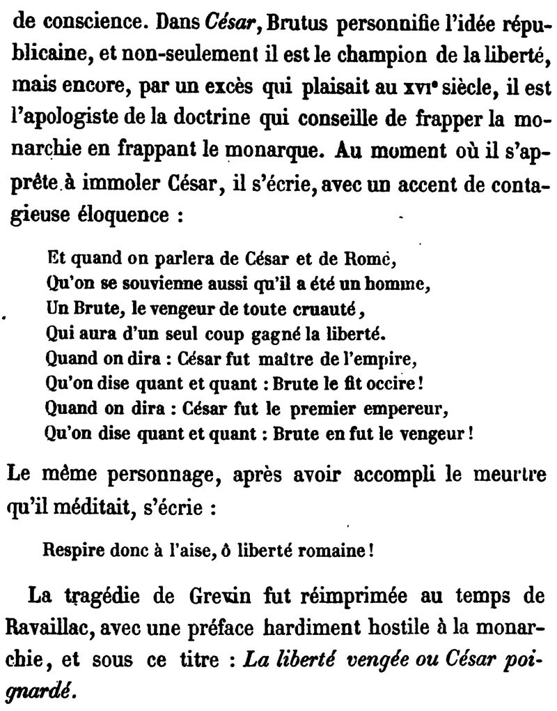

Grévin’s César (p. 31)
French: 1862, chapter on Grévin, p. 31, scan n45. Highlighted: what Lecky’s text and note draw on.

In César, Brutus personifies the republican idea, and he is not only the champion of liberty but also, by an excess that pleased the sixteenth century, the apologist of the doctrine that advises striking at monarchy by striking the monarch. As he prepares to sacrifice Caesar he cries out, with an infectious eloquence:
And when men speak of Caesar and of Rome,
Let them remember too that there was a man,
A Brutus, the avenger of all cruelty,
Who with a single blow will have won liberty.
When men say: Caesar was master of the empire,
Let them say in the same breath: Brutus had him killed!
When men say: Caesar was the first emperor,
Let them say in the same breath: Brutus was his avenger!
The same character, once the murder he planned is done, cries:
Breathe freely, then, O Roman liberty!
Grévin’s tragedy was reprinted in Ravaillac’s time, with a boldly anti-monarchical preface, under this title: Liberty Avenged, or Caesar Stabbed.
Translation: this edition’s draft. “Quant et quant”: at the same time.
Original French
Dans César, Brutus personnifie l’idée républicaine, et non-seulement il est le champion de la liberté, mais encore, par un excès qui plaisait au xvie siècle, il est l’apologiste de la doctrine qui conseille de frapper la monarchie en frappant le monarque. Au moment où il s’apprête à immoler César, il s’écrie, avec un accent de contagieuse éloquence:
Et quand on parlera de César et de Rome,
Qu’on se souvienne aussi qu’il a été un homme,
Un Brute, le vengeur de toute cruauté,
Qui aura d’un seul coup gagné la liberté.
Quand on dira: César fut maître de l’empire,
Qu’on dise quant et quant: Brute le fit occire!
Quand on dira: César fut le premier empereur,
Qu’on dise quant et quant: Brute en fut le vengeur!
Le même personnage, après avoir accompli le meurtre qu’il méditait, s’écrie:
Respire donc à l’aise, ô liberté romaine!
La tragédie de Grevin fut réimprimée au temps de Ravaillac, avec une préface hardiment hostile à la monarchie, et sous ce titre: La liberté vengée ou César poignardé.
Lecky (vol. II, ch. V, text at note 63): Grévin “brought it upon the stage in a play upon ‘The Death of Cæsar,’ which was first acted in 1560, and was reprinted with an anti-monarchical preface at the time of Ravaillac.” Chasles’s page supports the reprint and the preface. Lecky’s date of first performance is not on this page.
Further down the rabbit hole
Sources that Lecky cites in the notes next to the ones that cite this page.
- Mariana, De rege et regis institutioneBook I, chapter 6, “Is it lawful to kill a tyrant?”
- Suárez, Defensio fidei catholicae, Book VIMay the Pope release subjects from their oath to a king? The Jesuit reply to James I
- Toletus, Instructio sacerdotumA usurper may be killed, a lawful tyrant may not
- Van Bruyssel, Histoire du commerce et de la marine en BelgiqueThirty kingdoms trading with Flanders, and a friar who called murder ‘meritorious’
- Sá, Aphorismi confessariorumLecky quotes Sá word for word on tyrants
- Molina, De justitia et jureWhat Lecky left out of Molina on killing tyrants


Backlinks
Every place in Rationalism in Europe that links to this page (generated automatically when the site is built).
- Chapter V: note 63